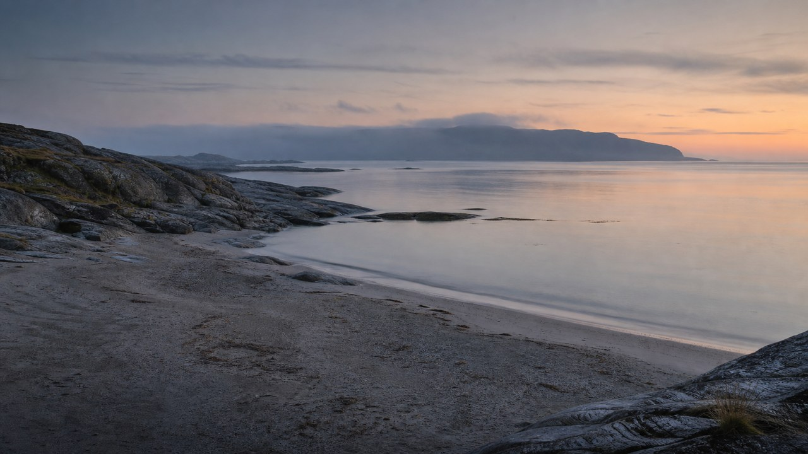
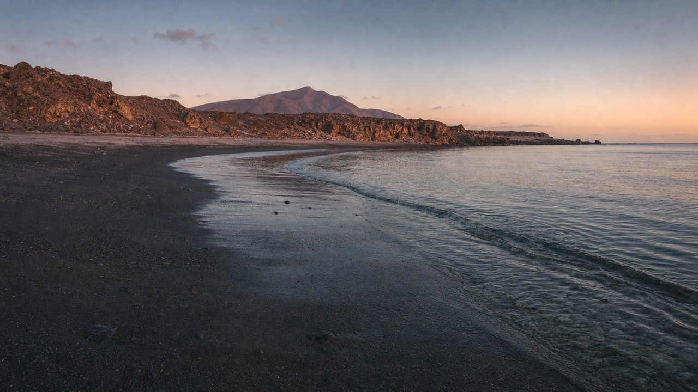
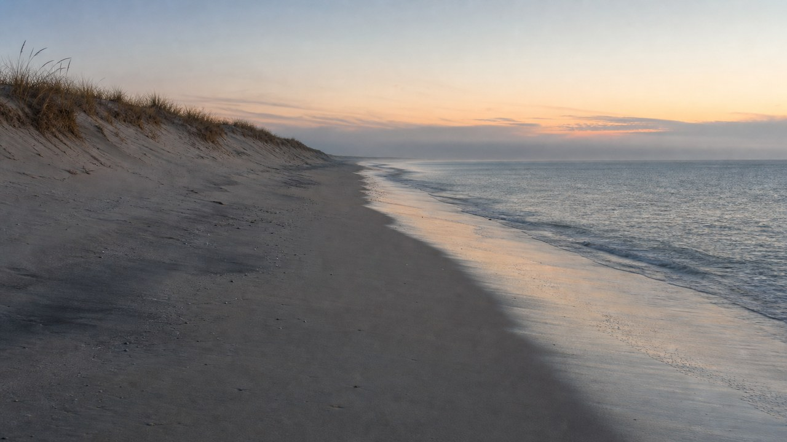

Laiba
340 naam — aur un mein se ek tum
Rafay ki taraf se — sirf Laiba ke liye
Ye koi lamba khat nahi hai. Bas wohi ek baat hai jo main mahino se sochta raha aur keh nahi paaya — isliye ise scroll karne wala bana diya.
Sawaal 01 — aur iske baad koi doosra nahi
Subah tumhara naam hai. Aankh khulti hai aur pehla khayal tum hoti ho. Har roz, bina naage.
Shaam bhi tumhari hai. Din bhar jo kuch hota hai, wo sab main tumhe batane ke liye jama karta rehta hoon.
Aur beech ka saara waqt bhi. Kaam, safar, khamoshi — har jagah tum saath chal rahi hoti ho.
Ab sirf ek sawaal baaki hai. Jo aaj tak zabaan par nahi aaya. Aaj aa raha hai — neeche, is page ke aakhir mein.
01 Ek baat, seedhi si
Pehle mohabbat ka matlab zyada tha.
Zyada baatein, zyada waade.
Zyada log.
Ab uska matlab kam hai.
Kam shor, kam bhaag-daud, kam naam.
Aakhir mein sirf ek naam bacha —
aur wo tumhara hai.
02 Ek din ki ginti
06:12
0
baar tumhara khayal aaya
Pehla khayal
Aankh khulte hi, bina koshish ke. Wahi naam.
Chai ke saath
Chhe baar — sirf ye sochte hue ke tum uthi ya nahi.
Kaam ke darmiyan
Screen par kuch aur hai, dimaag mein kuch aur.
Din ka sab se ooncha
Yahan ginti chhod di. Har cheez kisi na kisi tarah tumhari yaad dila rahi thi.
Ghar wapas
Rasta wahi, gaana wahi, khayal wahi. Kuch bhi naya nahi.
Aakhri khayal
Din shuru bhi tumse hua tha. Khatam bhi wahin hota hai.
03 Kahan le chaloon
Chaaron khali hain, chaaron door hain. Tum jo bhi chuno, main wahan tumhare saath hi hona chahta hoon.
01 / 04
Cala Ausente
39.2841° N, 2.9012° E
Mallorca — subah 06:12, aur sirf hum do



Hum saath pohnchte hain.
Jagah koi bhi ho — pehli subah wahan main tumhari taraf hi dekh raha hoonga.
04 Kahin bhi, bas saath